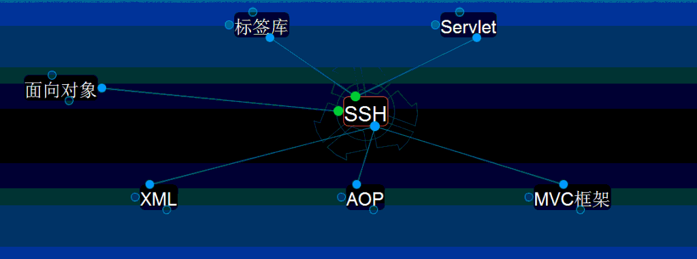
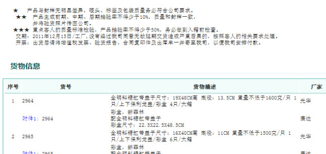
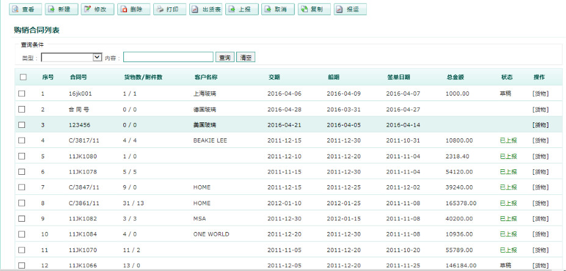

项目背景
杰信商贸是一家从事进出口贸易的公司，之前已有软件系统在运行，但由于是单机版软件系统， 用FOXBASE编写，多地、多部门人员配合较难，效率极低，靠人工打电话，出错返工常常发生， 财务核对工作量大。同时，随着公司发展业务发生变化，原有的系统已无法满足企业新需求，因此在此背景下研发 本系统。实现各地、各部门人员快速高效协作；不用再打电话协调，上一个流程做完，系统中 立即会有提醒下一流程人员，下一流程人员可立刻看到上流程提供的数据；实现新业务的融合； 时将财务从大量繁重的核对工作中解脱，极大提高了工作的效率和质量。
本系统的应用，实现异地网上统一办公，实现人员工作效率和质量的提升，同时为稽核和汇总 提供了最便捷的服务。也为管理层随时掌握公司运营数据提供了便捷的渠道。
项目特色
1、 典型的行业应用
典型进出口贸易公司核心流程，通过学习可以了解物流行业的企业是如何运作。2、 设计思想
程序的好坏不在于代码，代码只是具体实现形式，设计思想才是程序的关键。在本项目中， 通过多个团队、多年实际工作经验的积累，在设计上应用很多根据项目实际，应用很多很 有价值的设计技巧，这是我们学习的重点。3、 强大的统计报表支持
丰富的报表支持，有业务单据，如购销合同、出口商品报运单、月度统计出货表、装箱单、 海运委托书、发票、财务统计核算单；还有赏心悦目的动态统计图表，如厂家商品销售情 况统计、客户订单统计、重点客户统计、访问压力曲线图。充分挖掘原始数据的价值，用 丰富直观的表现形式表现出来，为企业决策提供直接的真实的数据支持。

1. 基于企业级主流架构S2SH。
2. 页面简单大方，配色清爽，布局合理，操作完全符合日常大众操作习惯，无需大量培训，就可以很快掌握，减低系统操作难度，加快系统应用的普及。
3. 系统易用性强，在很多方便充分考虑如何使客户录入更加规范准确，少出错，同时加快用户的处理速度。如保存和暂存功能，提示录入信息大段文字框，批量录入功能，批量删除功能，灵活的打印模板，用户可以自定义的内容默认值等等。
4. 业务流程简洁清晰，各级人员可以上报，同时也可以进行取消回退。
5. 系统使用ajax技术，局部刷新页面技术获取和提交数据，页面快速得到数据，而无需整屏刷新，给客户以最佳体验。
2. 页面简单大方，配色清爽，布局合理，操作完全符合日常大众操作习惯，无需大量培训，就可以很快掌握，减低系统操作难度，加快系统应用的普及。
3. 系统易用性强，在很多方便充分考虑如何使客户录入更加规范准确，少出错，同时加快用户的处理速度。如保存和暂存功能，提示录入信息大段文字框，批量录入功能，批量删除功能，灵活的打印模板，用户可以自定义的内容默认值等等。
4. 业务流程简洁清晰，各级人员可以上报，同时也可以进行取消回退。
5. 系统使用ajax技术，局部刷新页面技术获取和提交数据，页面快速得到数据，而无需整屏刷新，给客户以最佳体验。
1. 系统使用jQuery技术，加入页面特效，客户在使用中带来乐趣。
2. 登录的快速完成，用户只需输入部分内容，系统自动提示补全，方便用户操作。
3. 界面自定义布局，用户可根据自己的需要，随意在界面任意位置摆放消息或备忘信息框。如把最关注，最紧急的事情提示框放在显著醒目的位置。
4. 基于excel模板机制，打印出单据优美，纸质留档，同时也方便业务人员有需要时对内容进行更改。
5. 利用excel公式统计方法，自动计算出合计、总计，将原有财务人员繁重的统计工作解放出来，现只需轻点鼠标即可。
2. 登录的快速完成，用户只需输入部分内容，系统自动提示补全，方便用户操作。
3. 界面自定义布局，用户可根据自己的需要，随意在界面任意位置摆放消息或备忘信息框。如把最关注，最紧急的事情提示框放在显著醒目的位置。
4. 基于excel模板机制，打印出单据优美，纸质留档，同时也方便业务人员有需要时对内容进行更改。
5. 利用excel公式统计方法，自动计算出合计、总计，将原有财务人员繁重的统计工作解放出来，现只需轻点鼠标即可。

合同管理：合同由销售人员录入，并进行日常维护。一个合同包括多个货物信息，可能几款，可能几十款。每个货物可有几个附件信息，也可没有，附件就是包装纸等一些包装材料。支持导出到excel中，支持直接打印，打印要按厂家打印，同一家厂家放在一起，方便不同的销售专责发给其负责的厂商。货物一页两款货，也可以一页一款货。打印前可以自己设定。实现复制功能，将合同信息复制，修改其信息成为一个新的合同，这样方便操作人员，不用重新添加大量的信息。

报运单是提交给海关的审核性文件。销售专责负责报运单的录入。报运单中的货物信息从合同中取。一个工作簿放11条货物信息，超过放下一个工作簿。只有最后一个工作簿对毛重、净重、体积（Σ(长x宽x高)）合计。支持从多个购销合同中选取货物，并支持部分走货。支持导出到excel中，支持直接打印。